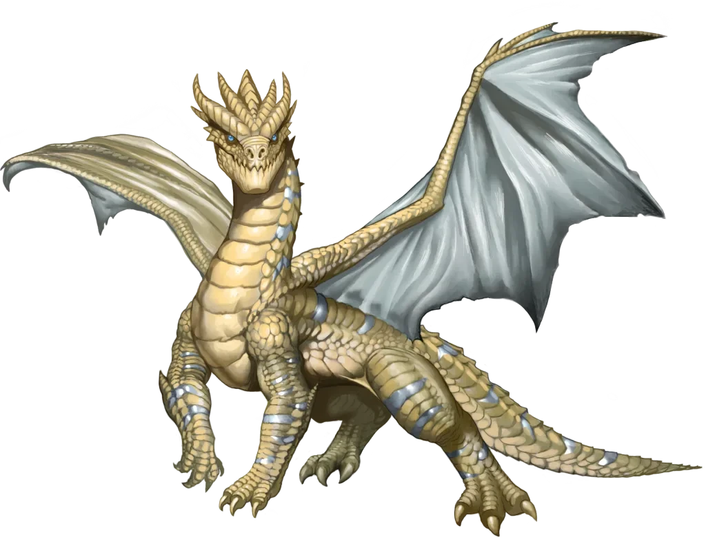
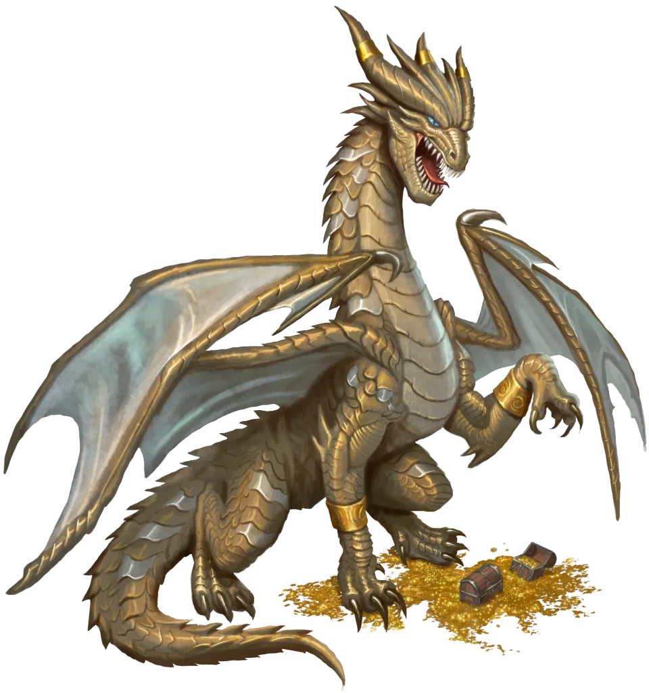

各年龄段数据卡
与其他巨龙――尤其是那些心高气傲到绝不屑于侍奉类人生物、甚至连合作都懒得屈就的同族――截然不同，人们最常遇到的佣兵龙往往正受雇于他人麾下，心甘情愿地充当部属。当然，这通常是因为某个虚荣到想要雇佣巨龙撑场面的雇主开出了荒谬绝伦的天价酬劳；而对于将这些奇珍异宝收入自家宝库，佣兵龙自然是来者不拒。 某条特定佣兵龙对报酬形式的偏好，往往直接决定了它愿意接洽哪类雇主与契约：最看重金银钱币的佣兵龙常为银行家与王公贵族效力；将知识奉为至宝的佣兵龙多半侍奉档案学者或学院名宿；而那些热衷于搜集魔法物品以强化自身实力的佣兵龙，则可能会受雇守卫锻造魔导器的工坊，或是护卫深入被遗忘地牢搜刮秘宝的冒险者。 卢德罗里尼莫并非每条佣兵龙都能交上开门红的好运、拥有一段光鲜亮丽的职业开端。事实上，年轻的佣兵龙常常低估契约法律条文的繁复与玄机，漏看那些看似细枝末节实则至关重要的字眼。卢德罗里尼莫正是吞下这一苦果的典型例子。 起初，他以为自己为一位富豪贵族效力的期限会在十五年后届满终止；然而他事后才惊觉，契约里的精确措辞竟规定他必须为“此后每一任继承人”分别服满十五年役期！如今，即将步入成年期的卢德罗里尼莫总算摸索出了一处暗藏的条文漏洞，有望借此摆脱这个尔虞我诈、内斗不休的贵族家族――正是该家族没完没了的自相残杀与频繁换代，将他脱身的日子一拖再拖。 不过，这一计划绝非十拿九稳。他还需要大量外援与指点，才能确保计策顺利实施；否则，他恐怕真得被这份人生中签下的第一份、也是唯一一份契约死死套牢一辈子了。 由于佣兵龙对自己真正渴求的报酬品类往往颇为挑剔专一，每当某条佣兵龙偶然赚到自己不感兴趣、却深知某位同族心仪已久的财物时，同族之间便衍生出了一个繁荣活跃的内部交易市场。倘若有人能打听到这类“巨龙交易集市”的风声，那里无疑是为特定差事物色合适巨龙的最佳场所――尤其是当潜在雇主希望寻找一头具备某项独门绝技与专长的佣兵龙时。 佣兵龙巢穴佣兵龙常年奔波在外履行契约，鲜少待在自己的巢穴里；但即便明知自己接下来数周、数月乃至数年都不会回巢一趟，它们依然偏爱保有一处专属巢穴。然而，巢穴一旦长期空置，便难免失修损毁、坍塌荒废，或是沦为冒险者与各路盗宝贼眼中的肥肉。于是，正如它们打理生活中其他诸多事务的惯用路数一样，佣兵龙想出了一个利用契约规避这些风险的妙招：简而言之，它们会在外出期间按固定租金将自家巢穴转租出去，并在租约中明文规定承租方必须在租期内妥善维护并保卫巢穴；否则，一旦巢穴受损或有任何财物遗失毁坏，承租方便须缴纳足以修复巢穴或照价赔偿损失的罚金。如此一来，只要租客还留有一口气在，佣兵龙就能稳稳追回一切损失。 至于那些没有特定收藏偏好、或是纯粹渴望包揽世间百宝的佣兵龙，与那些常靠偷盗或劫掠获取五花八门杂项财物的个人或组织――诸如盗贼公会、劫掠团、海盗与强盗帮派――签订契约往往最为省心。受制于注重契约的天性，佣兵龙通常不会亲自坐上这些行会与帮派的头把交椅，但它们往往会充当首领的左膀右臂，并分走仅次于首领的第二大份战利品（倘若首领那摇摇欲坠的统治地位全仰仗巨龙的武力支撑，那佣兵龙拿走最大头也未可知）。 灵魂收藏家大多数远古与太古佣兵龙都钟情于收集灵魂；而对这些灵魂收藏家而言，“恪守职业操守”的金字招牌至关重要――唯有赢得足够的信任，才能让世人放心大胆地在契约里拿自己的灵魂充当抵押品。至于为何会有如此多的佣兵龙热衷于搜集灵魂充实宝库――究竟是因为那些涉及契约魔鬼的传言确有其事，还是另有隐情――相比起轻率签字而痛失灵魂的现实危险而言，反倒不那么紧迫了。与狩猎龙表亲类似，热衷收集灵魂的佣兵龙往往也对某一特定类型的灵魂情有独钟；因此，这类佣兵龙的宝库显眼处总会陈列着封存有合意灵魂的璀璨宝石。至于这些佣兵龙究竟会如何使用这些灵魂――或者说，除了摆设观赏之外是否真有其他用途――至今仍是令我未能破解的一桩谜团。 坊间流传着一个关于佣兵龙的老掉牙笑话：在它们族谱的某一代上，先祖必定曾与契约魔鬼发生过远超商业往来范畴的“深度纠葛”，直到后来那纸契约期满失效，巨龙与魔鬼才分道扬镳。佣兵龙自己对这层影射可一点都不觉得好笑；然而它们与生俱来、信手拈来的魔法绝大多数都与魔鬼一样源自神术体系，这一事实着实令它们百口莫辩。而那些当真对这一笑话深信不疑的人所抛出的最“要命”（请原谅我在这里玩了个涉及堕狱罚罪的双关文字游戏）的铁证，便是最年长的佣兵龙同样痴迷于将灵魂视作硬通货，简直与九狱集市如出一辙。强者的灵魂、堕落的灵魂，乃至巨龙所赏识之人的灵魂――统统都能化作远古佣兵龙财宝库里流光溢彩的灵魂宝石与珍贵展品！ 头等军粮外出履约的佣兵龙常常需要执行耗时漫长的繁琐任务，长期驻扎在荒郊野外，而那种地方往往很难现成觅得足够喂饱一头巨龙的食物。倘若它们还统领着一支由其他佣兵龙或凡人雇佣兵组成的佣兵团，粮草问题便更是雪上加霜。因此，行军口粮成了必不可少的刚需；但话虽如此，凡人将领在行军途中喂给麾下大兵的那种难以下咽的猪食，绝大多数巨龙连碰都不会碰一下。相反，佣兵龙会精心烹制丰盛考究的特制军粮，既能全面满足自身的营养所需，味道又出奇地鲜美可口。这不仅大大提振了麾下士卒的士气，还在敌对士兵当中催生出了一种奇特的风气：人们往往把击败佣兵龙率领的分队视作天大的好运，因为那样就能大肆缴获它们美味绝伦的军粮了！当然，想要打赢一头佣兵龙，终归是说起来容易做起来难。 鉴于对契约精神的恪守，大多数佣兵龙都倾向于尊崇那些本身与契约权柄息息相关的神灵或至高存在。佣兵龙通常会审慎地挑选自己修习的神术，以便更好地保护雇主周全――至少在它们尚且年轻、对佣兵职责怀有理想主义热忱的时候是这样。而随着年岁渐长，佣兵龙便越来越倾向于掌握那些服务于自身图谋的法术。这也向雇主传递出了一道微妙的警告：花钱发号施令，可不意味着他们就能把自家的巨龙佣兵彻底捏在手心里。 魔鬼藏在细节里：卢德罗里尼莫的契约漏洞当我与佣兵龙卢德罗里尼莫交谈时，他正深陷那份契约的泥潭苦苦挣扎，对寻找脱身漏洞几乎不抱任何希望。好在契约并未禁止他向旁人谈论自身处境，我这才得以知晓他的遭遇。换作其他巨龙，或许会因为拉不下脸承认自己受骗上当而死要面子活受罪；但说实话，卢德罗里尼莫早已急需外援到了极点，甘愿为此咽下龙族的自尊。 作为坦诚接受专访、如实解答佣兵龙习性与自身不幸遭遇的交换条件，卢德罗里尼莫请求我在契约问题上帮他一把。 当然，若要提供帮助，他就必须把契约原件拿给我过目，允许我逐字逐句审阅其中的全部细则――而在我此前访谈过的所有其他佣兵龙那里，我还从未享受过这等殊荣。 于是我欣然应允。在与他一同仔细研读契约全文后，我敏锐地察觉到了几处措辞上的前后抵牾。鄙人虽是享誉世界的龙学大家，却终究不是讼师或契约法专家；因此我并不确定该如何利用这些发现，甚至不敢打包票它们是否真能帮上卢德罗里尼莫的忙。尽管如此，这条年轻的佣兵龙看上去已是欣喜若狂。接下来该如何深入钻研并迈出下一步棋，就要看他自己的造化了。 ――永光贤者卡利赞德雷克斯 “诡谲之契”莫卡普沃克西斯尽管佣兵龙们总爱刻意淡化这一现象的普遍程度，但学者们心知肚明：现存最年长的那批佣兵龙绝大多数都会开始染指涉及雇主灵魂的契约。不过，这并不意味着所有高龄佣兵龙皆是如此――这一趋势最著名的反例，便是“诡谲之契”莫卡普沃克西斯。当然，哪怕她从未对在交易中收取任何人的灵魂产生过半点兴趣，莫卡普沃克西斯的传说也绝不会让人觉得雇佣一头强横佣兵龙是桩可以掉以轻心的买卖。 即便如此，愚昧之徒与走投无路之人依然前赴后继地试图与这头强横的太古龙缔结契约，其中甚至还真有人能够得偿所愿；只不过在外人看来，究竟谁能获她垂青几乎全凭运气，完全看不出任何固定的规律或倾向。 在很长一段时间里，谁也想不明白为何莫卡普沃克西斯会回绝某些帝王开出的倾国重金，转头却收下乞丐掏出的、价值不过等同廉价饰品的旧信物并接下委托；但久而久之，对她行事作风深感好奇的龙学学者们还是设法归纳出了三条基本法则，至少能在一定程度上帮助世人预测“诡谲之契”的举动。这些法则是学者们基于长期观察与推演总结出的假说，莫卡普沃克西斯本人从未亲口承认过，而且众所周知，她兴之所至时也偶尔会做出违背这些规律的举动。尽管如此，对于她面对某份特定契约邀约时会作何反应，这仍是我们目前所能做出的最靠谱推测。 倒戈易主令人惊讶的是，许多佣兵龙明明打心底里厌恶某项差事，却依然会签下契约并严格照章办事。我曾对此百思不得其解，原以为凭它们的本事大可以轻松找到不那么令人反感的活计；为此，我特意请教了几条佣兵龙，请它们解释其中的缘由。它们向我给出了这样的辩解：接下一桩自己深恶痛绝的差事，恰恰能让巨龙名正言顺地刺探军情、摸清地形、深挖潜在敌人的核心机密――而那个冤大头对手非但毫无防备，还会笑脸相迎地掏钱买单！等到旧契约圆满履约完毕，它们便能拿手头掌握的内部情报作筹码，转头与前雇主的死敌谈下一份新契约。在佣兵龙自己看来，此举绝不能算作背叛――毕竟在它们心目中，自己尽管原则上不认同旧雇主的立场，却依然尽职尽责、无可挑剔地履行完了原契约；至于原契约结束之后发生的事，那纯粹只是另一桩生意罢了。倘若有人发觉自己雇来的佣兵龙正盘算着在不久的将来（以龙族的时间尺度而言）转投死敌，手头几乎没有任何补救良策：单方面撕毁契约固然能阻止佣兵龙继续窥探机密，却也恰好给了巨龙借违约罚则名正言顺实施报复的口实。 莫卡普沃克西斯第一法则：“诡谲之契”更倾向于接下新奇独特、前所未有的委托任务；而对于平庸乏味或千篇一律的常规差事，无论雇主开出多么丰厚的报酬，她都极少问津。考虑到她已活了逾千年之久，外人很难想象还有什么委托对她而言算得上真正的新鲜事；但哪怕只是透出一丝新意，也会大大提高她同意审阅契约的几率。 莫卡普沃克西斯第二法则：莫卡普沃克西斯从不按公开市场上的客观标价或世俗大众眼中的身价来衡量报酬的轻重；相反，她衡量价值的标准在于“失去这件东西会让准雇主有多心痛”――尤其是当那件报酬举世无双、无可替代之时。装满一整口巨箱的黄金或许会让一位皇帝的税收预算肉痛一阵子，但黄金本身对他而言毫无情感意义可言，若有必要，日后他随时还能再凑出一箱；可倘若一名乞丐献上的是朴素却承载着亡夫最后羁绊的婚戒，这份割舍的分量就要沉重得多了。 务必细读小字条款佣兵龙在商议契约条款时往往字斟句酌、谨慎至极，而任何打算雇佣它们的人最好也打起十二分精神照此办理。有些佣兵龙只是为了防范雇主背信弃义而例行尽职审查，另一些则会心怀恶意地在契约字里行间暗藏陷阱与霸王条款。世间有一条公认的铁律：倘若一头佣兵龙展露笑颜、二话不说便爽快签下了契约，那要么是里头藏着你没看出来的猫腻，要么就是它已经通过某种方式在这桩买卖里占尽了便宜。 莫卡普沃克西斯第三法则：“诡谲之契”酷爱借契约之力替人实现那些看似任何人都无法企及的宏愿或奢望，但她在履约时也永远只按契约的字面意思一板一眼地执行。这往往意味着雇佣她的人最终得到的并非自己真正想要的结局，活像是一桩被魔法扭曲了本意的祈愿――因此雇主务必后果自负。秉承这一准则，莫卡普沃克西斯要求所有登门求约者必须在不假他人之手的情况下，亲笔起草并呈交诉求的精确措辞。她不会像魔鬼那样故意在小字细则里塞进恶毒的漏洞；恰恰相反，把这当成一场游戏的她，更喜欢看着立约人自己写下的字句反过来化作反噬自身的梦魇――毕竟措辞都是雇主自己拟定的，哪能怪得了她呢！而当真有人聪慧周密到将所有漏洞堵得滴水不漏时，“诡谲之契”非但不会恼怒，反而会欣喜若狂。或许正因为她钟爱高水准的智力挑战，这寥寥数位妙人也是极少数有机会与她二度立约的幸运儿……当然，前提是他们手里还有另一件同样珍贵、且甘愿割舍的心头肉，用来换取她的再度相助。 服役期限相比按固定的天数或周数计酬当差，佣兵龙更倾向于按具体成果签署绩效契约：只要有桩差事需要办妥，佣兵龙便会拟定一份以大功告成为准的契约。不过，唯有年轻无知的愣头青才会在拟约时忘了写进某种脱身条款――以便在任务难度远超预期（或者说，恰如某位老奸巨猾的雇主事先算计好的那般棘手）、眼看就要被迫无休止地白干下去时体面退场。眼下正为契约焦头烂额的佣兵龙卢德罗里尼莫，吃的正是漏掉此类条款的大亏。 |
 佣兵龙  佣兵龙 |